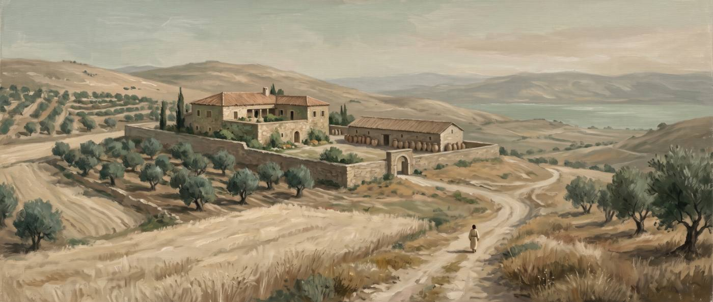
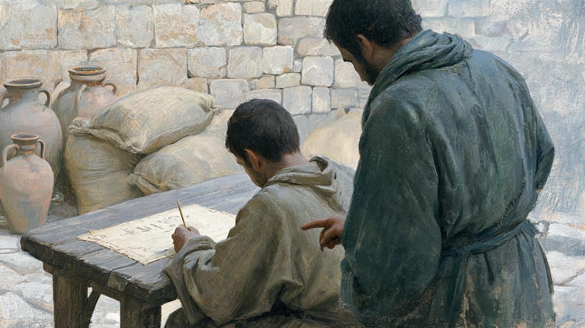
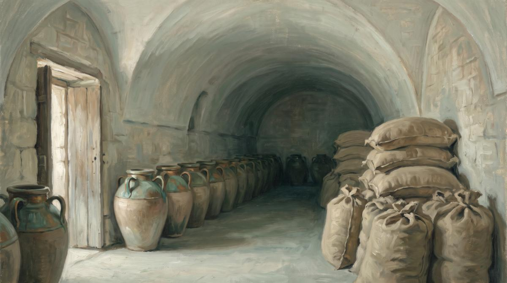

옳지 않은 청지기는 왜 칭찬받았을까
주인의 재산을 낭비하다 쫓겨나게 된 청지기가 주인에게 빚진 사람들을 불러 빚 문서를 고쳐 쓰게 했어요. 그런데 주인은 그를 칭찬해요. 예수님은 거짓말을 칭찬하신 걸까요? 이 비유는 무엇을 가르치려는 이야기일까요?
한눈에 보기
어떤 이야기일까요?
쫓겨나게 된 청지기가 남은 며칠 동안 자기 앞날을 마련한 이야기예요.
청지기(οἰκονόμος)는 부자의 재산을 대신 맡아 굴리는 관리인이에요. 주인의 이름으로 계약을 맺고 빚 문서를 관리할 만큼 권한이 컸어요. 이 청지기가 주인의 소유를 낭비한다는 말이 주인 귀에 들어갔고, 주인은 “네가 보던 일을 셈하라” 하고 해고를 알려요(16:2).
청지기가 속으로 이르되 주인이 내 직분을 빼앗으니 내가 무엇을 할까 땅을 파자니 힘이 없고 빌어 먹자니 부끄럽구나 내가 할 일을 알았도다 이렇게 하면 직분을 빼앗긴 후에 사람들이 나를 자기 집으로 영접하리라 하고
누가복음 16:3–4 · 개역개정
땅 파기는 당시 가장 힘든 막일이었고 구걸은 가장 낮은 신분이었어요. 청지기는 둘 다 못 하겠다고 생각해요. 그래서 꾀를 내요. 쫓겨난 뒤에 자기를 집으로 받아 줄 사람들을 미리 만들어 두기로 한 거예요.
그는 주인에게 빚진 사람들을 한 명씩 불렀어요. 빚 문서는 빚진 사람이 자기 손으로 액수를 써서 채권자 쪽이 보관했어요. 청지기는 그 문서를 돌려주며 빚진 사람에게 직접 고쳐 쓰게 해요.
말하되 기름 백 말이니이다 이르되 여기 네 증서를 가지고 빨리 앉아 오십이라 쓰라 하고
누가복음 16:6 · 개역개정
두 번째 사람의 “밀 백 석”은 “팔십”으로 바뀌어요(16:7). 왜 직접 쓰게 했는지는 본문이 말하지 않아요. 글씨가 빚진 사람 것이라 겉으로 멀쩡한 문서가 된다고 보는 학자도 있고, 빚진 사람을 한패로 묶으려 했다고 보는 학자도 있어요. 빚을 크게 덜어 받은 사람들은 청지기에게 갚아야 할 은혜를 진 셈이에요. 받은 호의는 갚아야 한다는 생각이 그 시대 사회를 움직이는 큰 규칙이었어요.

빚은 얼마나 컸을까요?
페르시아 왕이 허락한 물자 한도와 같은 수량이에요. 가난한 농부의 빚으로 보기는 어려워요.
개역개정의 “말”과 “석”은 우리말 단위로 옮긴 것이고, 원문은 히브리 단위 밧(βάτος)과 고르(κόρος)예요. 한 고르는 열 밧이에요(에스겔 45:14). 정확한 용량은 자료마다 달라서 아래 표는 어림값이에요. 요세푸스가 남긴 두 수치는 서로 맞지도 않아요.
| 품목 | 개역개정 | 원문 단위 | 한 단위 | 백 단위 | 깎아 준 양 |
|---|---|---|---|---|---|
| 올리브기름 | 백 말 | 밧 100 | 약 22~39L | 약 2,200~3,900L | 50밧 (절반) |
| 밀 | 백 석 | 고르 100 | 약 220~525L | 약 22,000~52,500L | 20고르 (5분의 1) |
기름 백 밧은 2리터 페트병으로 천 개가 넘어요. 밀 백 고르는 무게로 어림하면 17톤에서 40톤쯤이라, 10톤 트럭 두 대에서 네 대를 채울 양이에요. 에스라 7:22에서 페르시아 왕 아닥사스다가 성전 일에 쓰라고 허락한 한도도 “밀은 백 고르까지 … 기름도 백 밧까지”였어요. 수량이 똑같아요. 채무자들은 큰 땅을 빌려 짓는 소작인이나 상인이었을 거예요.
값으로 따진 어림도 있어요. 예레미아스의 계산을 옮긴 키너의 배경주석에 따르면, 두 사람이 덜어 받은 빚은 각각 약 500데나리온이에요. 한 데나리온이 일꾼의 하루 품삯이니(마태복음 20:2), 하루 품삯 오백 일치쯤 되는 셈이에요. 다만 옛 물가를 어림한 추정이라 정확한 액수는 아니에요.

예수님이 거짓말을 칭찬하셨나요?
아니에요. 칭찬한 사람은 이야기 속 주인으로 읽는 편이 자연스럽고, 본문은 같은 문장에서 그를 “옳지 않은” 사람이라고 불러요.
주인이 이 옳지 않은 청지기가 일을 지혜 있게 하였으므로 칭찬하였으니 이 세대의 아들들이 자기 시대에 있어서는 빛의 아들들보다 더 지혜로움이니라
누가복음 16:8 · 개역개정
헷갈리는 까닭은 “주인”으로 옮긴 헬라어 퀴리오스(κύριος)가 “주님”도 되기 때문이에요. 누가는 이야기를 서술하면서 예수님을 “주께서”(ὁ κύριος)라고 부를 때가 많아요. 7:13, 10:1, 10:41, 11:39, 12:42, 13:15, 17:6, 18:6, 22:61이 그래요. 그래서 8절의 칭찬도 예수님의 평가로 읽는 학자들이 있어요.
그런데 이 이야기 안에서는 같은 낱말이 이미 세 번 부자 주인을 가리켜요. 3절 “주인이 내 직분을 빼앗으니”, 5절 “주인에게 빚진 자”와 “내 주인에게”가 다 퀴리오스예요. 그래서 8절도 그 주인으로 읽는 학자가 더 많아요.
| 살펴본 것 | 이야기 속 주인으로 읽으면 | 예수님으로 읽으면 |
|---|---|---|
| 같은 이야기 속 낱말 | 3·5절의 “주인”과 이어져요 | 앞의 세 번과 뜻이 갑자기 바뀌어요 |
| 18:6과 비교 | 18:6은 “주께서 또 이르시되”로 말을 시작해요. 16:8에는 “말했다”가 없고 “칭찬하였으니”만 있어요 | 두 “불의한” 인물 비유가 모두 퀴리오스로 맺어져요 |
| 9절 첫머리 | 9절 “내가 너희에게 말하노니”에서 예수님의 말씀이 새로 시작해요 | 9절 원문은 “나도 너희에게 말한다”(καὶ ἐγώ)로 시작해요. 8절도 예수님 말씀이면 “나도”가 어색해져요 |
| 그럴 법한가 | 속은 쪽이 상대의 꾀를 인정하는 장면은 옛 이야기에도 있어요 | 손해 본 부자가 칭찬할 리 없다는 반론이 있어요 |
| 대표 학자 | 피츠마이어, 마셜, 놀랜드, 클로펜보그, 랜드리·메이 | 예레미아스, 도흐호른(2023) |
예수님의 평가로 읽어도 칭찬의 대상은 “지혜 있게” 한 점 하나로 좁혀져 있어요. 사람에 대한 판정은 같은 문장의 “옳지 않은 청지기”(τὸν οἰκονόμον τῆς ἀδικίας)예요. 칭찬과 판정이 한 문장에 따로 들어 있어요.
무엇을 칭찬했을까요?
앞날을 내다보고 대비한 영리함이에요. 정직과는 다른 이야기예요.
“지혜 있게”로 옮긴 프로니모스(φρονίμως)는 신약에서 이곳에 한 번뿐이에요. 같은 뿌리의 형용사 프로니모스(φρόνιμος)는 마태복음에서 반석 위에 집을 지은 사람(7:24), 등불 기름을 미리 챙긴 다섯 처녀(25:2–9)에게 쓰여요. 닥칠 일을 알고 미리 준비한다는 뜻이에요. 착하다는 뜻이 꼭 들어 있지는 않아요.
누가복음 12장에도 청지기가 나와요. 거기서 예수님이 찾으시는 사람은 지혜와 충성을 함께 갖춘 청지기예요.
주께서 이르시되 지혜 있고 진실한 청지기가 되어 주인에게 그 집 종들을 맡아 때를 따라 양식을 나누어 줄 자가 누구냐
누가복음 12:42 · 개역개정
“진실한”의 원문은 피스토스(πιστός), 곧 충성되고 믿을 만하다는 말이에요. 16장의 청지기는 지혜는 있었지만 충성은 없었어요. 바로 뒤 10–12절에서 예수님은 이 “충성”을 네 번이나 말씀하세요. 누가복음에서 피스토스가 나오는 여섯 번 가운데 네 번이 이 세 절이에요.
8절 뒷부분의 “빛의 아들들”은 하나님을 아는 사람들이에요. 놀랜드의 주석에 따르면, 사해 근처 쿰란 공동체의 문서도 자기들을 “빛의 아들들”, 바깥을 “어둠의 아들들”이라 불렀어요. “자기 시대에 있어서는”이라는 단서가 붙어 있어요. 세상 사람이 더 낫다는 말이 아니에요. 앞날을 대비하는 영리함에서 그들이 더 낫다는 말로 읽혀요.
왜 나쁜 사람 이야기를 하셨을까요?
나쁜 사람에게서 한 가지 성질만 떼어 와 “이 사람도 이러는데” 하고 견주시려는 거예요.
누가복음에는 이런 비유가 하나 더 있어요. 하나님도 두려워하지 않던 재판장이 귀찮아서 과부의 원한을 풀어 주는 이야기예요(18:1–8). 누가가 관사를 붙인 “불의의”(τῆς ἀδικίας)를 사람에게 쓴 곳은 이 두 비유뿐이에요. 13:27에는 관사 없이 한 번 나와요. 두 이야기는 생김새도 닮았어요.
| 16:1–8 청지기 | 18:1–8 재판장 | |
|---|---|---|
| 주인공 | 옳지 않은 청지기 | 불의한 재판장 |
| 속으로 하는 말 | “내가 무엇을 할까”(3–4절) | “내가 그 원한을 풀어 주리라”(4–5절) |
| 맺음 | 주인이 칭찬함(8절) | “주께서 또 이르시되 불의한 재판장이 말한 것을 들으라”(6절) |
| 견주는 말 | 이 세대의 아들들이 빛의 아들들보다 더 지혜로움(8절) | “하물며 하나님께서 … 풀어 주지 아니하시겠느냐”(7절) |
재판장 이야기는 하나님이 귀찮아서 들어주신다는 뜻이 아니에요. 청지기 이야기도 같아요. 흉내 내라는 것은 문서를 고친 일이 아니에요. 위기가 왔을 때 앞날을 내다보고 대비한 그 영리함 하나예요. “너희가 악할지라도 좋은 것을 자식에게 줄 줄 알거든 하물며”(11:13)도 같은 방식으로 견주는 말이에요.
빚을 깎아 준 건 무슨 일이었을까요?
학자들의 결론이 갈려요. 본문은 이자도 수수료도 말하지 않아요.
본문이 확실히 말하는 것은 세 가지예요. 청지기는 이미 해고 통보를 받았어요(2절). 그 틈에 주인에게 빚진 두 사람에게 증서의 액수를 낮춰 쓰게 했어요(5–7절). 그리고 본문은 그를 “옳지 않은” 사람이라 불러요(8절). 그 밖의 설명은 모두 본문 바깥 자료에서 들여왔어요.
| 학설 | 대표 학자 | 근거 | 약점 | 판정 |
|---|---|---|---|---|
| 또 한 번 주인을 속였다 | 놀랜드 1993, 클로펜보그 1989, 판 에크 2017, 도흐호른 2023 | 8절의 “옳지 않은”, 1절 낭비가 이어짐 | 주인이 왜 칭찬하는지 따로 설명해야 해요 | 가장 무난 |
| 율법이 금한 이자를 뺐다 | 데렛 1961, 마룰리 2012 | 동족에게서 이자를 받지 말라는 율법. 기름과 밀의 감면 비율이 다른 것이 이율 차이 때문이라는 주장 | 본문에 이자가 없어요. 이자를 뺐다면 왜 “옳지 않은”일까요 | 가설 |
| 자기 수수료를 포기했다 | 피츠마이어 1964 | 주인에게 손해가 없으니 칭찬이 자연스러움 | 깎은 액수가 수수료로는 너무 커요. 그런 수수료가 있었다는 사료도 없어요 | 근거 약함 |
| 주인의 너그러움에 걸었다 | 베일리 1976 | 감면 소식이 퍼지면 주인은 너그러운 사람으로 칭송받아요. 이제 와서 취소하면 체면을 잃어요 | 청지기를 가두지 않은 것만으로 주인이 너그럽다고 보기는 지나쳐요 | 부분 수용 |
| 주인의 명예를 되살렸다 | 랜드리·메이 2000 | 낭비로 상한 주인의 명예를 감면으로 되살리고, 청지기 자신이 다시 일할 길도 열어요 | 청지기의 계획은 설명해도 칭찬까지는 다 설명하지 못해요 | 부분 수용 |
| 흔히 하던 합법적 감면이었다 | 굿리치 2012 | 로마 시대 지주들이 밀린 소작료를 자주 깎아 주었다는 자료 | 본문이 “옳지 않은”이라 부르는 것과 부딪혀요 | 가설 |
율법은 동족에게 이자를 받지 말라고 해요(출애굽기 22:25, 레위기 25:36–37, 신명기 23:19–20). 1세기 요세푸스도 먹고 마시는 것에 대한 이자까지 금한다고 설명해요. 200년경에 정리된 유대 법전 미쉬나는 “밀 두 세아를 꾸어 주고 세 세아를 받는 것”을 금지된 이자의 예로 들어요. 같은 미쉬나에는 메뚜기나 마름병이 온 지역을 덮쳤을 때 소작료를 깎아 주는 규정도 있어요. 이런 자료들은 이자설과 감면설의 배경으로 쓰여요. 어느 설을 택해도 이 비유의 큰 줄기는 크게 바뀌지 않아요. 비유 전체를 다르게 읽는 도흐호른 같은 학자는 예외예요.
그럼 무엇을 배우라는 걸까요?
예수님은 비유 뒤에 세 가지를 이어 말씀하세요.
하나, 재물로 친구를 사귀라 (9절)
내가 너희에게 말하노니 불의의 재물로 친구를 사귀라 그리하면 그 재물이 없어질 때에 그들이 너희를 영주할 처소로 영접하리라
누가복음 16:9 · 개역개정
9절은 4절의 문장 틀을 그대로 가져와요. 청지기는 “직분을 빼앗긴 후에” 사람들이 “자기 집으로” 맞아 주기를 바랐어요. 예수님은 “그 재물이 없어질 때에” “영주할 처소로” 맞아들여지는 쪽을 보라고 하세요. 4절과 9절에 같은 동사 “영접하다”(δέχομαι)가 쓰이고, 때와 집이 바뀌어요. 청지기가 내다본 앞날은 해고된 뒤까지였어요. 제자가 내다볼 앞날은 재물이 다 없어진 뒤예요.
“재물”은 아람어 맘몬을 그대로 옮긴 말이에요. 본래 “돈, 재산”을 뜻하는 평범한 낱말이에요. “불의의 재물”의 뜻은 학자들 사이에 갈려요. 부정하게 번 돈으로 읽는 학자도 있고, 이 세상에 속해 믿을 수 없는 돈으로 읽는 학자도 있어요. 11절에서 “불의한 재물”이 “참된 것”과 짝을 이루는 점은 뒤쪽 읽기에 힘을 실어요.
친구가 누구인지는 누가복음 앞뒤가 단서를 줘요. “너희 소유를 팔아 구제하여 … 하늘에 둔 바 다함이 없는 보물”(12:33), 잔치에 갚을 것이 없는 가난한 사람들을 부르라는 말씀(14:13–14), 그리고 조금 뒤의 부자와 나사로 이야기(16:19–31)가 그래요. 그래서 친구를 가난한 이웃으로 읽는 학자가 많아요. 맞아들이는 “그들”이 도움받은 가난한 이웃인지, 하나님을 에둘러 말한 표현인지는 학자들 사이에 갈려요.
둘, 작은 것에 충성하라 (10–12절)
“지극히 작은 것에 충성된 자는 큰 것에도 충성되고”(10절). 여기서 작은 것은 돈이에요. 11절은 돈을 “불의한 재물”이라 부르고 12절은 “남의 것”이라 불러요. 지금 손에 든 재물은 내 것이 아니라 잠시 맡은 것이라는 뜻이에요. 남의 재산을 맡았다가 낭비한 청지기와 정반대 자리예요. 맡은 것에 충성한 사람에게 “참된 것”과 “너희의 것”이 주어져요.
셋, 두 주인을 섬길 수 없다 (13절)
집 하인이 두 주인을 섬길 수 없나니 혹 이를 미워하고 저를 사랑하거나 혹 이를 중히 여기고 저를 경히 여길 것임이니라 너희는 하나님과 재물을 겸하여 섬길 수 없느니라
누가복음 16:13 · 개역개정
이 말씀은 마태복음 6:24와 헬라어가 거의 글자까지 같아요. 누가에는 “집 하인”(οἰκέτης) 한 낱말이 더 있을 뿐이에요. 마태는 산상수훈에 두었고, 누가는 청지기 비유 끝에 두었어요. 9–12절이 “재물을 잘 쓰라”로 흐르다가 13절에서 “재물을 주인으로 섬기지는 말라”로 선을 그어요. 재물은 쓰는 도구는 될 수 있어도 섬길 주인은 될 수 없어요.
어린이와 함께 어떻게 읽을까요?
아래 이야기와 질문은 아이에게 그대로 읽어 줄 수 있게 썼어요.
이야기 다시 들려주기
옛날에 아주 큰 부자가 있었어요. 재산이 너무 많아서 대신 관리해 줄 사람을 두었어요. 이런 사람을 “청지기”라고 해요. 가게 주인을 대신해 돈과 물건을 맡아 보는 관리인 같은 사람이에요.
그런데 청지기가 주인 재산을 함부로 써 버린다는 소문이 났어요. 주인이 불러서 말했어요. “장부를 정리해서 가져와라. 너는 이제 그만둬야 한다.”
청지기는 걱정이 됐어요. “이제 어떡하지? 땅 파는 일은 힘들어서 못 하겠고, 구걸하기는 창피해.” 그러다 꾀를 냈어요. 주인에게 빚진 사람들을 한 명씩 불렀어요.
“주인에게 얼마 빚졌지요?” “기름 백 항아리요.” “여기 증서가 있으니 얼른 오십이라고 고쳐 써요.” “당신은요?” “밀 백 수레요.” “팔십이라고 써요.”
빚을 확 줄여 줬으니 빚진 사람들은 청지기에게 고마워했겠죠. 청지기는 “나중에 쫓겨나면 이 사람들이 나를 자기 집에 받아 주겠지” 하고 생각한 거예요. 그런데 뜻밖에도 주인은 이 옳지 않은 청지기를 칭찬했어요. 쫓겨날 날을 알고 앞날을 미리 챙긴 것이 “지혜 있다”는 거예요.
- Q. 예수님이 거짓말한 사람을 칭찬하신 거예요?
- 아니에요. 성경에는 주인이 칭찬했다고 쓰여 있어요. 이야기 속 부자 주인이에요. 그리고 같은 문장에서 그 사람을 “옳지 않은 청지기”라고 불러요. 칭찬받은 건 정직함이 아니라, 쫓겨날 날이 다가온다는 걸 알고 앞날을 미리 준비한 영리함 하나예요.
- Q. 그럼 왜 이런 나쁜 사람 이야기를 하셨어요?
- 8절 끝에 이런 말이 붙어 있어요. 이 세상 사람들이 자기 앞날을 챙기는 데는 하나님의 사람들보다 더 영리하다는 말이에요. 나쁜 사람이라도 앞날을 챙기는 영리함만큼은 배울 수 있다는 뜻이에요. 누가복음 18장의 “불의한 재판장”도 그렇게 쓰인 나쁜 사람이에요.
- Q. 빚을 깎아 준 건 착한 일 아니에요?
- 그 빚은 청지기에게 진 빚이 아니라 주인에게 진 빚이었어요(5절). 청지기는 쫓겨난 뒤 자기를 받아 줄 집을 마련하려고 깎아 주었어요(4절). 9절에서 예수님이 말씀하신 “재물로 친구를 사귀라”는 맡은 재물을 남을 위해 쓰라는 쪽이라 목적이 달라요.
- Q. 우리는 무엇을 준비하면 돼요?
- 예수님은 세 가지를 말씀하셨어요. 돈으로 친구를 사귀는 것(9절), 용돈 같은 작은 돈을 맡은 뜻대로 바르게 쓰는 것(10–12절), 돈을 주인으로 모시지 않는 것(13절)이에요. 누가복음은 앞뒤에서 가난한 이웃을 도우라고도 말해요(12:33, 14:13–14). 돈은 언젠가 다 없어지고, 지금 가진 돈은 하나님이 잠깐 맡겨 주신 “남의 것”이에요.
이야기의 “기름 백 항아리”, “밀 백 수레”는 아이 말로 바꾼 표현이에요. 성경을 함께 펴 읽을 때는 개역개정의 “기름 백 말”, “밀 백 석”을 짚어 주면 좋아요. 아이들은 “말”을 타는 말로 알아듣기 쉬워요. 여기서 “석”은 고르를 옮긴 말이라 쌀 한 가마보다 훨씬 많아요. 빚을 깎아 준 일이 사기였는지 이자를 뺀 것이었는지는 학자들도 의견이 갈리니, 아이에게는 본문이 말하는 “옳지 않은”과 “지혜 있게”까지만 들려주면 돼요.
정리하면
| 항목 | 근거 | 판정 |
|---|---|---|
| 8절에서 칭찬한 이는 이야기 속 부자 주인이다 | 3·5절의 κύριος, 9절 첫머리, 18:6과의 차이 | 다수설 |
| 칭찬의 대상은 정직이 아니라 대비하는 영리함이다 | 8절 “옳지 않은” + φρονίμως, 마 7:24·25:2–9의 φρόνιμος | 확인 |
| 예수님은 부정직을 본받으라고 하셨다 | 같은 문장의 판정, 10–12절의 충성 요구 | 반증 |
| 9절은 4절의 문장 틀을 다시 쓴다 | δέξωνται … εἰς 구문, 집 → 영주할 처소 | 확인 |
| 깎아 준 빚은 율법이 금한 이자였다 | 본문에 이자 언급 없음 | 가설 |
| 9절 “불의의 재물”은 부정하게 번 돈이다 | 11절 “참된 것”과의 짝 / 학자별 갈림 | 미결 |
| 9절 “그들”은 도움받은 가난한 이웃이다 | 12:33 · 14:13–14 · 16:19–31 / 하나님을 에둘러 말한 표현일 가능성 | 미결 |
| 기름 100밧·밀 100고르의 정확한 용량 | 요세푸스 두 수치 불일치, 고고학 추정과 차이 | 미결 |
어려운 말 풀이
- 청지기 οἰκονόμος
- 주인의 집안 살림이나 땅과 재산을 대신 맡아 관리하는 사람이에요. 노예일 수도 자유인일 수도 있었고, 이 비유의 청지기가 어느 쪽인지는 본문이 말하지 않아요.
- 증서 γράμματα
- 빚 문서예요. 빚진 사람이 자기 손으로 액수를 써서 채권자 쪽이 보관했어요.
- 밧 · 고르
- 히브리 사람의 부피 단위예요. 밧은 주로 기름 같은 액체를, 고르는 주로 곡식을 재요. 한 고르는 열 밧이에요(에스겔 45:14). 정확한 용량은 자료마다 달라요.
- 데나리온 δηνάριον
- 로마의 은화예요. 일꾼의 하루 품삯쯤이었어요(마태복음 20:2).
- 맘몬 μαμωνᾶς
- “재물, 돈”을 뜻하는 아람어예요. 신약에서는 예수님의 말씀에만 네 번 나와요(마태복음 6:24, 누가복음 16:9 · 11 · 13).
- 빛의 아들들
- 하나님을 아는 사람들을 가리키는 말이에요. 사해 근처 쿰란 공동체의 문서도 자기들을 이렇게 불렀어요.
- 미쉬나 Mishnah
- 유대교의 구전 율법 해석을 200년경에 정리한 책이에요. 예수님보다 늦게 편집되어 1세기 관습을 그대로 보여 준다고 단정할 수는 없어요.
- 요세푸스
- 1세기 유대 역사가예요. 『유대 고대사』에서 율법과 도량형을 설명했어요.
근거 자료
헬라어 통계는 SBL 헬라어 신약(SBLGNT)의 형태소 자료를 직접 집계한 값입니다. SBLGNT와 비잔틴 다수본문(RP2018)을 견주면 16:1–13에서 뜻이 갈리는 곳은 9절 한 곳입니다. 12절은 일부 사본(B, L 등)이 “우리의 것”으로 읽는다고 놀랜드의 주석이 적습니다. 비평본문은 “그것이 없어질 때”(ἐκλίπῃ), 비잔틴 본문은 “너희가 없어질 때”(ἐκλίπητε)이며, 개역개정은 비평본문을 따릅니다.
밧과 고르의 용량은 요세푸스 『유대 고대사』 8.2.9(밧 = 72 섹스타리우스)와 15.9.2(고르 = 아티카 메딤노스 10)를 Whiston 영역본으로 확인해 계산했습니다. 두 수치를 에스겔 45:14의 “한 고르는 십 밧”에 맞추면 서로 어긋나므로 표에는 범위로 적었습니다. 밧 약 22L는 고고학 항아리 측정에 기댄 통상 추정치이며 원 보고서는 확인하지 못했습니다. 데나리온 환산은 키너의 배경주석이 옮긴 예레미아스의 계산입니다. 원서와 대조하지 못했고, 보유본 스캔의 숫자 일부가 흐려 다시 확인이 필요합니다.
미쉬나 바바 메치아 5:1·9:6은 Sefaria의 히브리어 원문과 영역을 대조했습니다. 데렛, 피츠마이어, 베일리, 클로펜보그, 마셜, 예레미아스의 견해는 놀랜드의 WBC 주석과 다른 연구의 소개로 간접 확인했고, 굿리치(2012)는 저자 발췌와 다른 논문의 인용으로만 확인했습니다. 쿰란 문서(1QS 1:9, 1QM 1:3)의 “빛의 아들들” 호칭은 놀랜드의 WBC 주석이 든 목록을 따랐고 원문은 대조하지 못했습니다.
- SBLGNT / MorphGNT 형태소 자료 — οἰκονόμος · οἰκονομία · φρονίμως · φρόνιμος · ἀδικία · μαμωνᾶς · πιστός · ἐκλείπω 집계, 눅 16:1–13 · 마 6:24 원문 대조
- Robinson–Pierpont 비잔틴 다수본문 2018, 누가복음 16:1–13 대조
- 요세푸스 『유대 고대사』 4.8.25 · 8.2.9 · 15.9.2 — Whiston 영역(ccel.org)
- 미쉬나 바바 메치아 5:1 · 9:6 — Sefaria 원문·영역
- 존 놀랜드, 『WBC 성경주석 35 누가복음(중)』 630–653쪽
- 크레이그 키너, 『IVP 성경배경주석 신약』 누가복음 16:1–13 해설(269–270쪽)
- D. Landry & B. May, “Honor Restored,” JBL 119 (2000): 287–309
- L. Marulli, “‘And How Much Do You Owe?’,” Tyndale Bulletin 63 (2012): 199–216
- J. K. Goodrich, “Voluntary Debt Remission and the Parable of the Unjust Steward,” JBL 131 (2012): 547–566
- E. van Eck, “Realism and Method: The Parables of Jesus,” Neotestamentica 51 (2017): 163–184
- J. Dochhorn, “Das Gleichnis vom ungerechten Haushalter (Lk 16,1–8),” Biblische Zeitschrift 67 (2023): 64–85